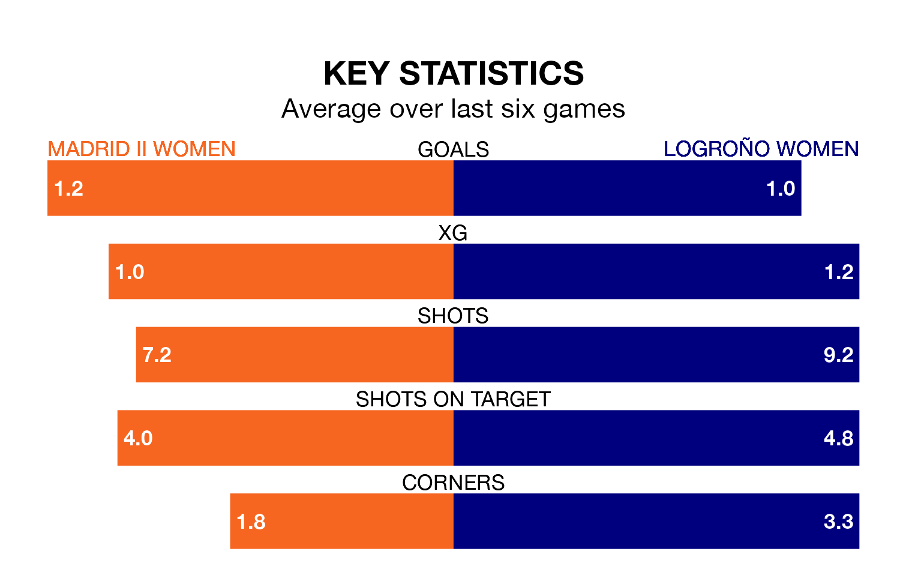

Struggling Madrid II Women face Logroño Women on Saturday looking to build on a win in their last league outing.
After securing all three points with a 2-1 victory over Atlético Madrid II Women on March 23, Madrid II sit bottom of the Primera Federación Femenina.
They travel to play a Logroño side ninth in the standings, who also won their last match, 1-0 against Europa Women, on March 24.
Madrid II are in bad form in the Primera Federación Femenina, with one win and five losses from their last six games.
With four wins and two losses over that period, Logroño's form is much better – they have taken 12 points from 18, compared to the home team's three.
With 16 goals in 22 games so far this season, Madrid II are the league's joint-second-lowest scorers with 0.7 goals per game. And they are conceding more than average, letting in 44 goals at a rate of 2.0 per game.
The visitors, meanwhile, are average scorers, with 1.2 goals per game. They have conceded 1.4 goals per game.
Updated: 12:16 (UTC), 25/03/24